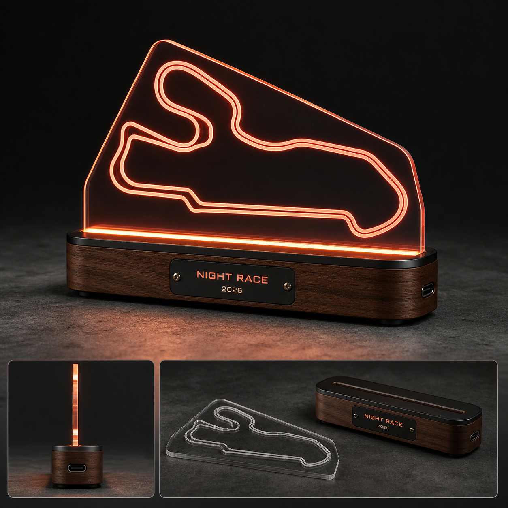

Drop 01 / Desk object
Night Circuit Ambient Lamp
Dimmable edge-lit racing line with a warm, furniture-grade base.
- ✓Three warm light levels
- ✓Replaceable acrylic panel
- ✓USB-C powered, cable included
$89.00
Taxes calculated at checkoutTracked deliveryDispatches in 3–5 business days
Easy returns30 days from delivery
Gift-readyProtective, low-plastic packaging
01 / The object
Built for the hours between races.
What it is
A compact ambient lamp that turns the geometry and tension of a night race into a warm line of light.
What makes it different
The circuit is interpreted as an original abstract racing route. A low-profile base and restrained detailing keep it closer to a design object than novelty merchandise.
02 / Why it works
The details do the talking.
A quiet reference
Recognizable to people who follow racing, considered enough to live anywhere.
Material first
Selected for feel, weight, finish, and how it handles everyday use.
Ready to give
A complete object and a considered unboxing—no extra wrapping required.
03 / Specification
Everything before checkout.
05 / FAQ
Before you ask the pit wall.
Yes. It lifts vertically from the base for cleaning or future panel swaps.
A 1.5 m USB-C cable is included.